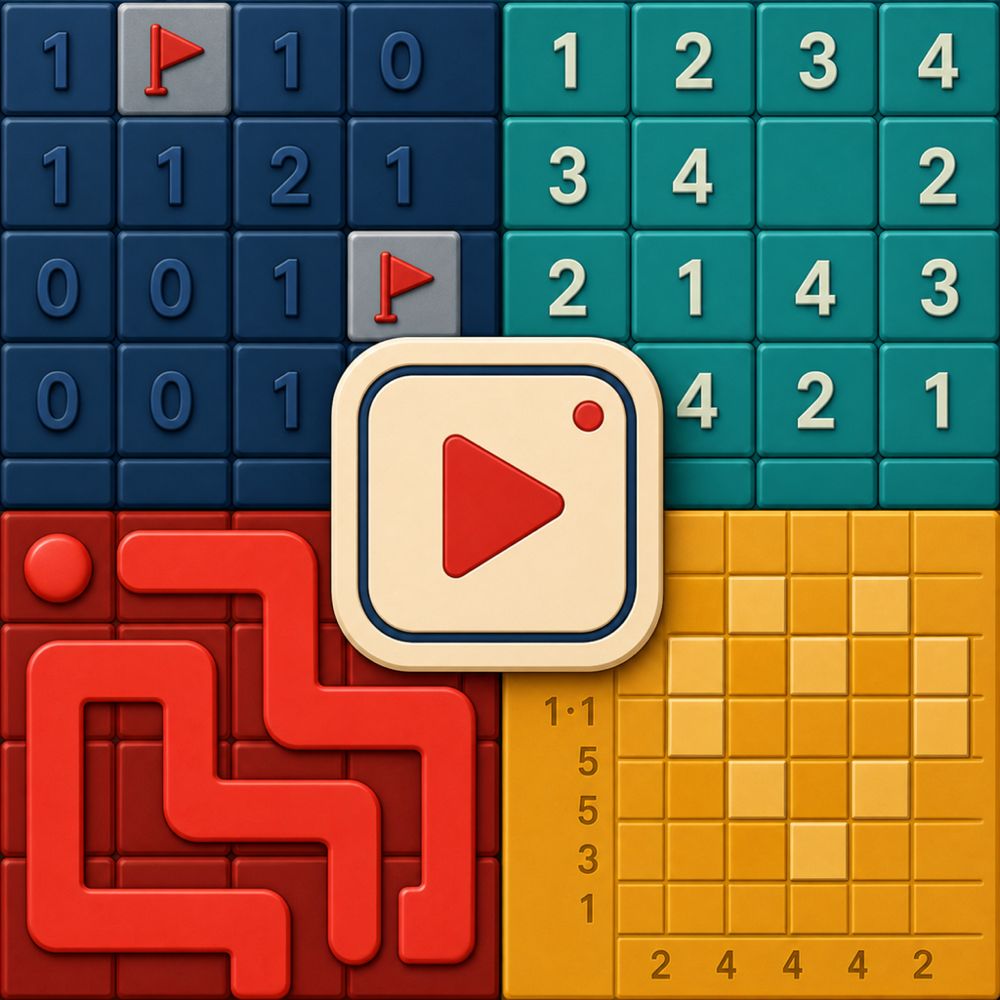
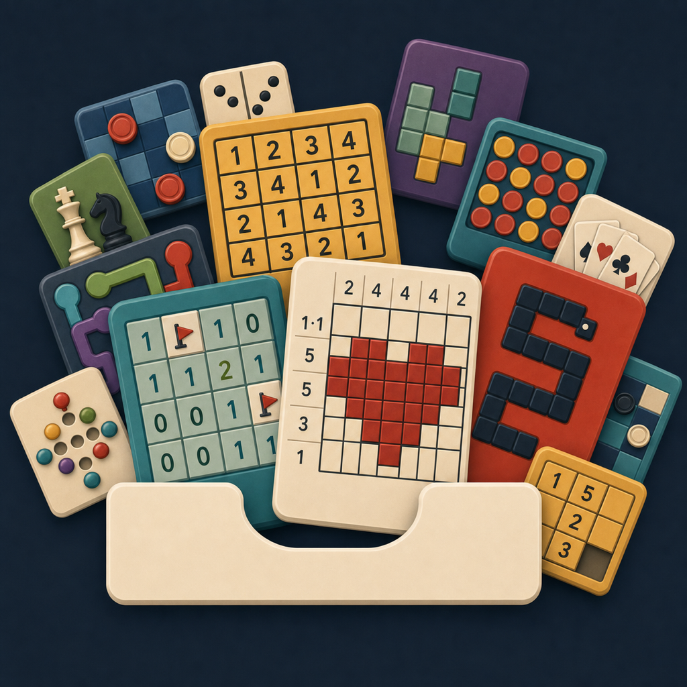
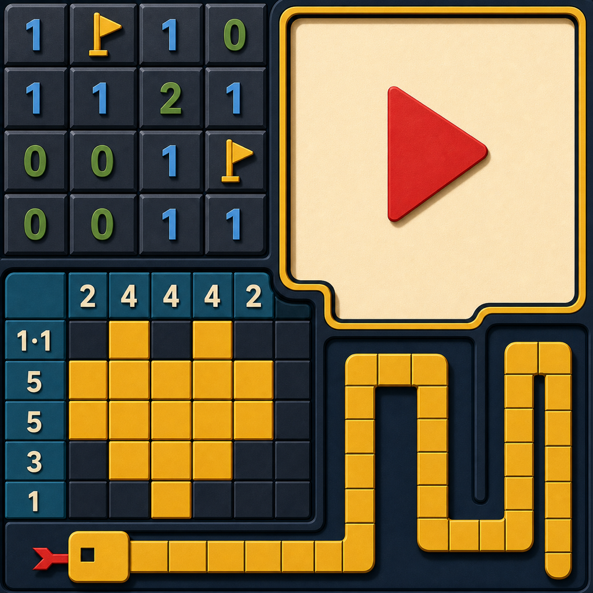
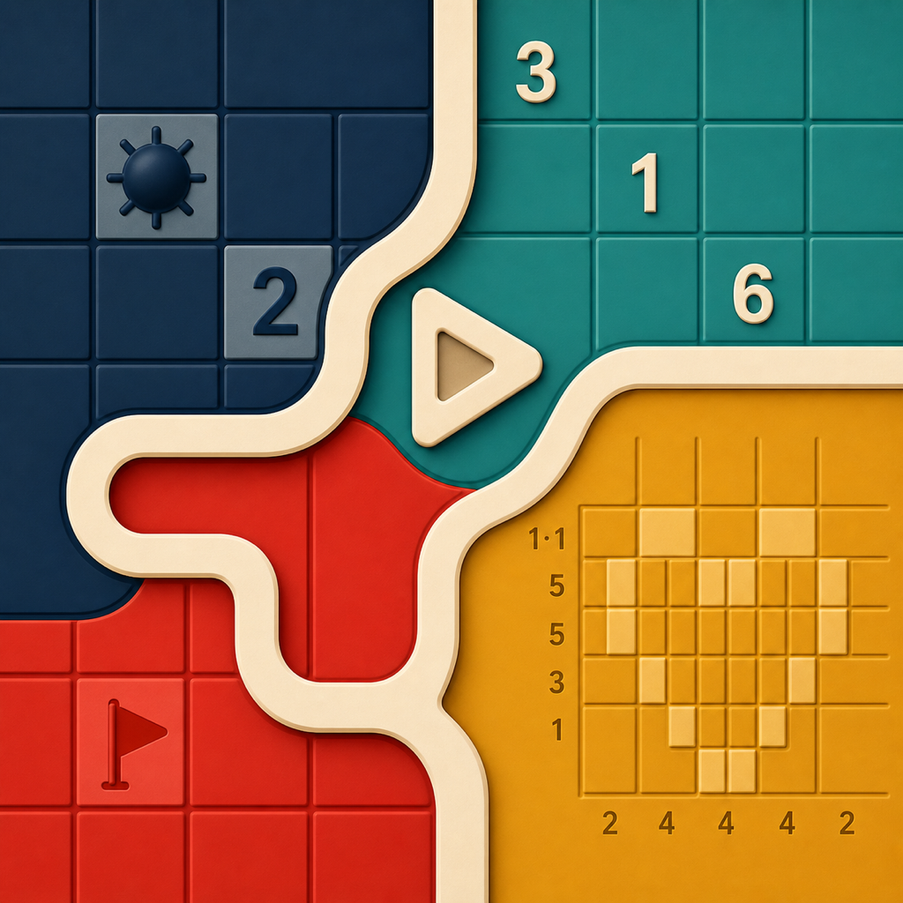

9A.3R
Current-games explosion
Only current GameDrawer families fill the fan; Video Mode becomes the central focus card.
The drawer explosion now contains only games that exist in GameDrawer, 7B.2 receives a polish pass, and 4A.4 splits into flowing and block-built interpretations. The current 9A.2 remains untouched as the benchmark.
These are the four candidates to judge in this round. Shortlisting is saved locally in this browser.
Only current GameDrawer families fill the fan; Video Mode becomes the central focus card.

Stronger hierarchy, consistent depth, cleaner seams, and a more deliberate Video Mode frame.

One cream ribbon joins four valid game regions around an integrated viewing aperture.

Large colored mechanics own the edges while a calm, solid Video Mode panel anchors the center.
The winning 9A.2 is preserved exactly as it was—no reconstruction or cleanup.

The stable reference: clear drawer metaphor, actual games, and Video Mode integrated into the fan. This remains the bar the new candidates need to beat.
The three originals behind this refinement pass, plus the retained 9A.2 winner.


